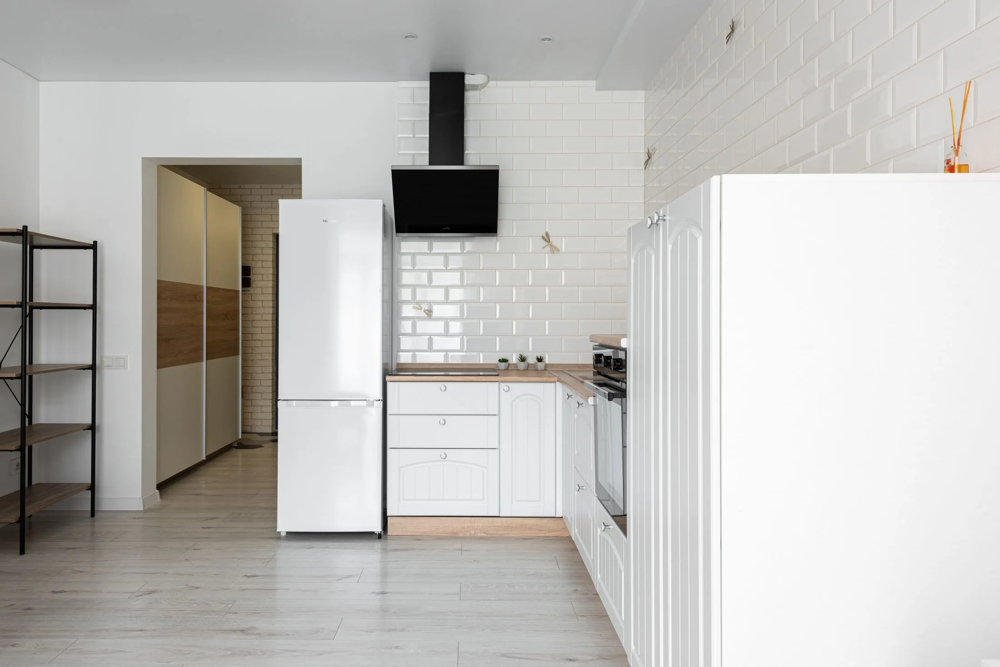
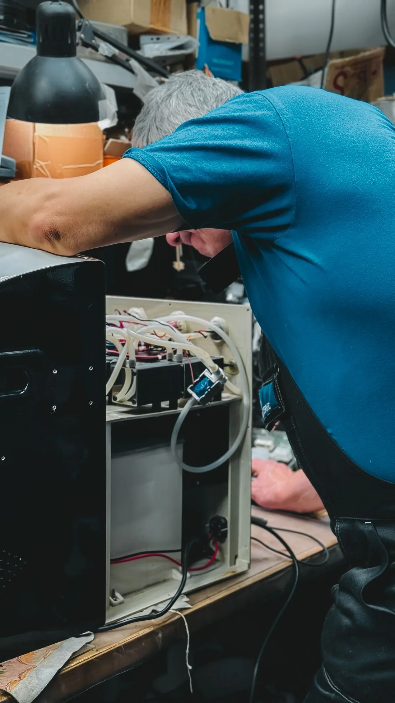
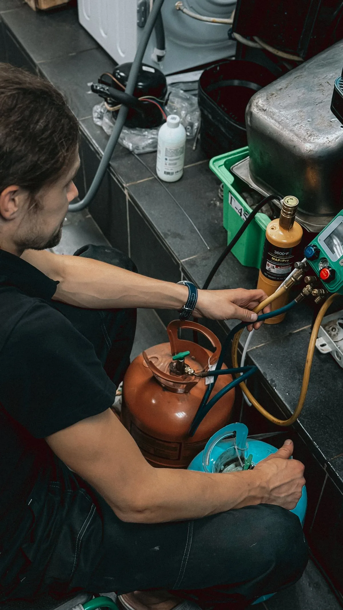
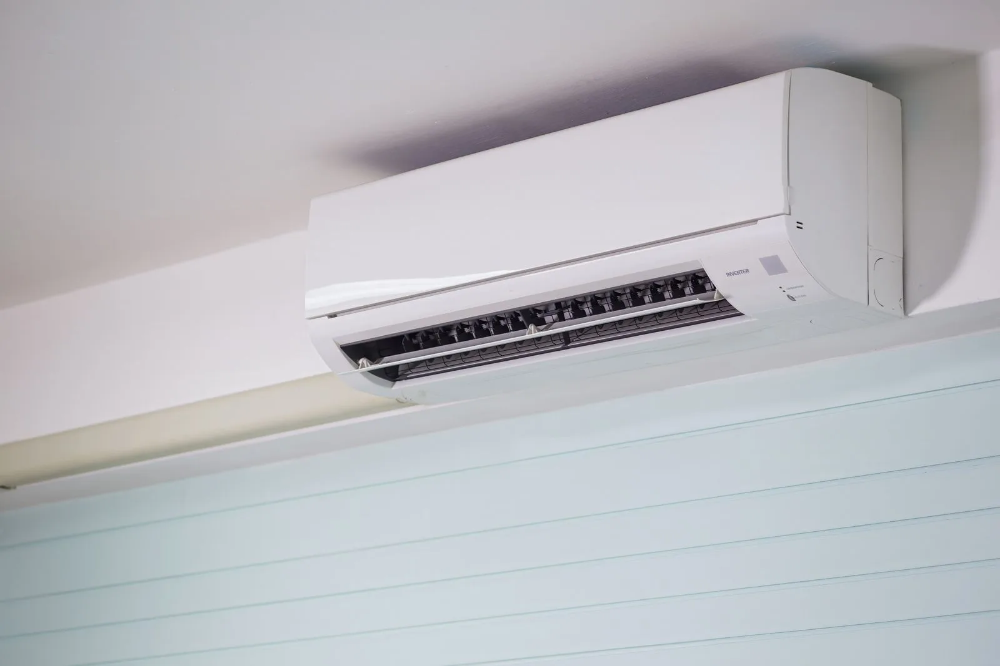

Refrigeração
Geladeiras e freezers são exemplos de equipamentos que podem compor esta seção. Confirmar tipos, marcas e serviços disponíveis.
Preparar consulta ↗
AM Refrigeração e Climatização. Um ponto de partida para conversar sobre o seu equipamento e o cuidado que ele precisa.
Prévia para revisão. Serviços, contato e região a confirmar.
Uma boa conversa começa pelo que você percebe no aparelho.
Esta é a proposta de apresentação da AM Refrigeração e Climatização. O espaço reúne informações para facilitar o primeiro contato e organizar o pedido de atendimento.
O catálogo definitivo, as marcas atendidas e a forma de atendimento serão acrescentados após confirmação da empresa.
Organize seu pedido ↗
Catálogo demonstrativo para revisão. Os itens abaixo precisam ser confirmados pela AM antes da contratação.
Referências visuais de banco para esta prévia. As imagens são ilustrativas e não representam trabalhos ou produtos da AM.


Preencha os detalhes para montar um resumo do pedido. Nesta prévia, a mensagem pode ser copiada; nenhum dado será enviado.
+55 92 9525-1613
Número transcrito do perfil. Confirmar antes de ativar chamadas e WhatsApp.
O perfil informa disponibilidade 24 horas. Agenda e prazo de resposta ainda precisam ser definidos.
[Cidade e região a confirmar]
O endereço e a área de atendimento serão informados aqui. Após a confirmação, esta seção receberá o mapa e as orientações para contato.
Para a versão final, definir também se o serviço acontece no local do cliente, em oficina ou nos dois formatos.
O catálogo desta prévia é demonstrativo. Os serviços, os equipamentos e as marcas atendidas devem ser confirmados pela AM Refrigeração.
Modelo, marca, sinais observados e quando o problema começou ajudam a apresentar o pedido. A avaliação e o procedimento dependem de confirmação com a empresa.
A cidade e a área de atendimento ainda serão definidas. A prévia não presume cobertura nem endereço comercial.
O perfil recebido informa disponibilidade 24 horas. Agenda, visitas e prazo de retorno precisam ser confirmados antes de divulgar essa condição como serviço.
Por enquanto, você pode montar e copiar o resumo da solicitação. O envio pelo WhatsApp será ativado após a confirmação do número completo.